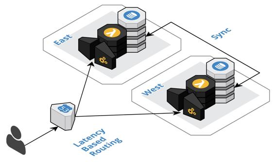

Multi-regional deployment
A major cloud-native theme that I repeat over and over is putting proper bulkheads in place to guard against inevitable failures and control the blast radius. In Chapter 2, The Anatomy of Cloud Native Systems, we discussed how cloud regions provide a natural and necessary bulkhead, as regional failures are inevitable. The following diagram depicts how running a multi-regional deployment intrinsically requires redundant infrastructure, replicates data between the regions, routes subsets of traffic to each region, and provides failover when a region is not operating properly. These are all the ingredients needed to perform zero-downtime deployment, as highlighted for blue-green and canary deployments. This is a great opportunity to fill two needs with one fell swoop.

With the multi-regional deployment approach, we stagger the deployment of the new version to each region after confirming the deployment in the previous region. If anything goes seriously wrong with the deployment to a region, then its traffic will failover to the nearest region. If there was a less significant problem with the deployment in a region, then the users of that region would be impacted until the deployment was either rolled forward or rolled back. To compensate for this, we could have the regional deployments follow the moon, so to speak, so that fewer users are actively using the system in a specific region. With synthetic transition monitoring in place, as we will discuss in Chapter 8, Monitoring, this continuous smoke testing would assert the success of the regional deployment.
To implement regional deployment, we simply add an NPM script and a CI job for each region. The regional deployment jobs could be triggered when a region-specific tag is applied to the master branch. Another approach is to have regional branches off the master branch and use a pull request to merge the master branch into each regional branch to trigger the regional jobs. There may be variations on these two options that suite a team's specific needs.
Value-added cloud services, such as cloud-native databases, Function-as-a-Service, and API Gateway services make multi-regional deployments both economical and much more manageable. Cloud-native database support for regional replication is becoming more and more turnkey. Function-as-a-Service and API Gateway services support versioning to facilitate rollback and incur no additional cost when deployed to multiple regions. The Serverless Framework and Infrastructure as Code services are already geared towards multi-regional deployment.
Probably the most important aspect of zero-downtime deployments is the batch size of the specific change. By decoupling deployment from release and leveraging a task branch workflow, we are significantly reducing the risk of each deployment. If a team's confidence level is still low, then this may be an indication that the batch sizes are still too large or that a component itself is too large and should be divided up. There is still room for improving the zero-downtime deployment approach by leveraging feature flags.